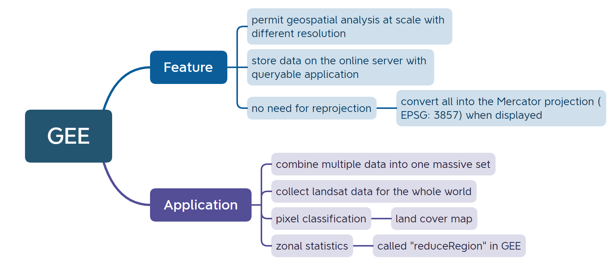
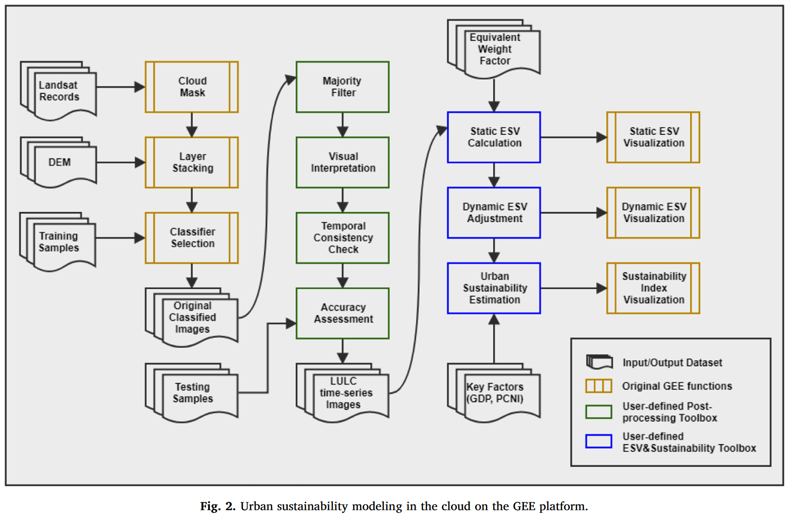
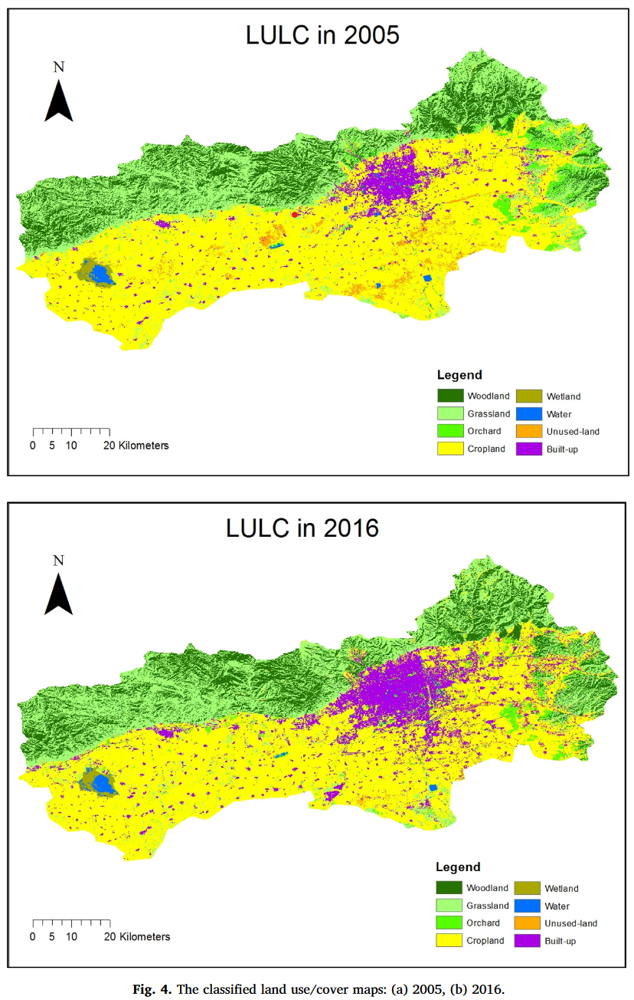
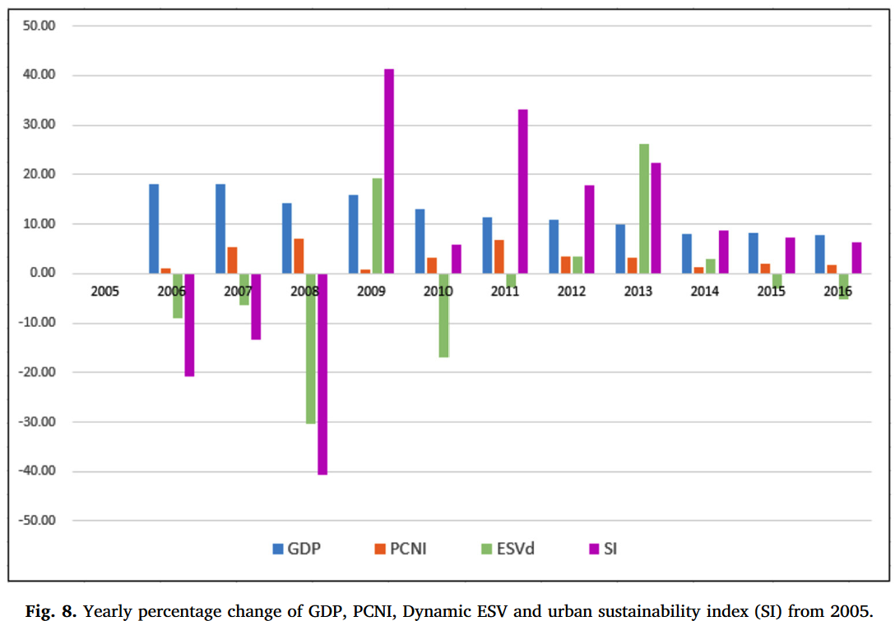

5 Week5: Google Earth Engine
This is the learning diary for week five, introducing Google Earth Engine. And the application is to build up urban sustainability model based on the concept of ecosystem service value.
5.1 Summary

GEE has a cloud-based geospatial processing capability and accessibility to a large collection of geospatial datasets, which enables environmental and urban studies conveniently and efficiently.
5.2 Application
Liang et al. (2020) built up urban sustainability model based on the concept of ecosystem service value (ESV) and in the cloud with GEE; is the first application of classifying GEE Landsat time-series images to compute yearly ESV; and creates the first set of cloud tools to augment GEE for ecologists and urban modelers to model urban sustainability from GEE and ESV. Applying in Hohhot City, the model successfully estimated ecosystem service values and analyzed urban growth sustainability. It also revealed spatial disparities and temporal dynamics of urban growth sustainability in Hohhot City.
5.2.1 Data source
To demonstrate how to detect time-series (yearly from 2005 to 2016) LULC changes, a comprehensive geospatial dataset, including Landsat5 TM, Landsat7 ETM+ and Landsat8 OLI, was retrieved from Google Earth Engine
5.2.2 Methological

image retrieval and preprocessing with the main tasks of data normalization and time-series image stacking
LULC preliminary classification, including the selection of classification systems, appropriate classifiers, and training and testing samples
- existing GEE functions: Classification and Regression Trees (CART), Minimum Distance (MIN), and Random Forest (RF) classifiers were compared with the same training and validation data
GEE has supported different types of pixel-based classifiers for image extraction, including conventional parametric supervised classifiers (i.e. Minimum distance) and machine learning classifiers (i.e. Random Forest, Classification and Regression Trees), although the Object-based image analysis (OBIA) has not been supported yet. In addition, the confusion matrix has been realized in GEE and the related APIs have been provided as well. The overall accuracy and kappa statistics can be directly computed in GEE for assessment.
LULC post-classification, consisting two primary functions of removing errors and reducing noises of the initial classification and checking temporal consistence of the classified images
urban sustainability modeling in the context of ESV, including the determination of weight parameters of different land use categories and various ecological functions before computing static ecosystem service value (ESV), the computation of dynamic ESV through the integration of social development variables, and the modeling of urban sustainability by considering gross domestic product (GDP) and per capita net income (PCNI)
visualization and analysis of the modeling outcomes
5.2.3 Result
- LULC

urban built-up area in the city center of Hohhot expanded a lot from 2005 to 2016, and several suburban centers and distant areas observed apparent urban expansion.
- ESV estimation and urban sustainability modeling

The dynamics of SI displayed a three-phased change. From 2005 to 2008, despite continuous growth of GDP and PCNI, SI reduced sharply in response to the dramatic decline of ESVd, especially in 2008. From 2009 to 2013, SI was considerably improved, although it showed obvious fluctuation. The final phase of SI change started in 2014. Though SI was positive, the increase percentage displayed a slightly decreasing trend.
5.3 Reflection
There is difference in accuracy among those function of decision trees. In the study above, the RF classifier produced the highest accuracy and was finally chosen. RF classifier is effective because of its insensitivity to noise or over classifying. RF classifier was employed with 50 classification trees based on a sensitivity test of 10, 20, 50, 100, 500 trees, because little performance improved after 50 trees to this study (Liang et al. 2020).
GEE is quite wonderful because there are tons of datasets cover the world and over the years, which is convenient for research of space-time evolution. Besides, user can design specific functions for their own studies and then repeat the analysis process easily.
One of the main advantages of Google Earth Engine is its ability to process large amounts of satellite data quickly and efficiently. This makes it a valuable tool for a wide range of applications, including environmental monitoring, disaster response, and land use planning.
From the perspective of GEE technology, the augmentation of GEE APIs and functions can be implemented with either JavaScript or Python. Python tools, such as image analysis and statistical modeling tools, can be easily to integrate with APIs of GEE to strength our functions. In addition, Pythons provides a more flexible environment to develop user-defined functions with more intuitive user interface in comparison with GEE’s online Code Editor. Therefore, the integration of Python and GEE can realize more comprehensive and sophisticated sustainability algorithms, to provide better evaluation tools and to support flexible user interactions with the ESV estimation and sustainability modeling algorithms.